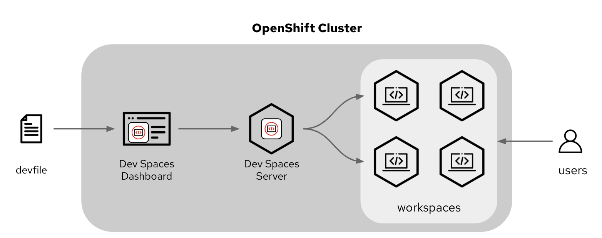
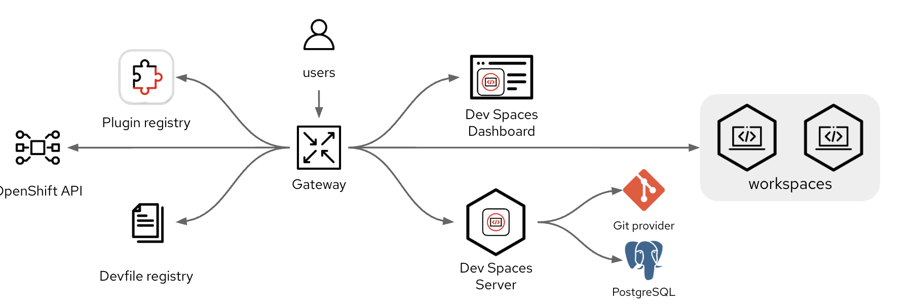

The Architecture of DevSpaces
Architecture Introduction
The Dev Spaces platform comprises two operators that are installed on the OpenShift cluster that provide the various services explained below. For a user the main mechanism for interacting with Dev Spaces is the devfile. This YAML resource contains information including :
-
The repositories to which the development environment should connect to get access to assets for development
-
Commands to be executed within the development environment
-
Container images that hold the commands that are to be executed
The user creates, or locates, a devfile that they wish to use. This is launched on the DevSpaces server platform, via the Dev Spaces dashboard, a web interface. The Dev Spaces server will create the workspace for the user by running appropriate container images on the OpenShift cluster, as shown below.

Architercture Further Components
The Dev Spaces platform actually contains a number of additional components that perform the actions described below.

The gateway
This is a central server component that manages access and traffic for the entire platform. It acts as a secure entry point for all user and system requests, performing the following tasks :
-
Routing Requests: It uses Traefik to route incoming requests to the appropriate internal services, such as the User Dashboard, devfile Registries, or individual user workspaces.
-
User Authentication: It authenticates users via OpenID Connect (OIDC) using the OpenShift OAuth2 proxy, ensuring that only authorised personnel can access the development environment.
-
Access Control: It applies OpenShift Role-Based Access Control (RBAC) policies using kube-rbac-proxy to strictly control which resources a user can view or modify.
-
Infrastructure Management: Managed by the OpenShift Dev Spaces operator as the che-gateway deployment, it serves as the secure front-end for various backend components, including the Plug-in Registry and the main Dev Spaces.
The Plugin Repository
This is a collection of ready-to-use plugins and extensions for development environments in OpenShift Dev Spaces. It is recommended that organisations create and manage their own plugin repository to offer specific content and to ensure that unauthorised extensions and plugins from internet sites are not used. The plugin registry offers the following facilities :
-
Curated Extensions: A selected subset of extensions from the Open VSX Registry, ensuring compatibility with the Visual Studio Code environment.
-
Air-Gapped Support: The repository is specifically designed to support offline, proxy-restricted, and air-gapped environments, allowing developers to use essential tools without an active internet connection to public registries.
-
Language & Tech Support: It provides plugins for various programming languages (e.g., Java, Python, Go, Node.js) and technologies like Ansible, supporting features like syntax highlighting, linting, and autocomplete.
The devfile registry
This is a core service that provides a collection of ready-to-use devfiles
|
Treat the DevSpaces registry as a source of base devfiles that can be used for more specific purposes in a repository. Without the context of a repository to be cloned into the workspace the devfile is only partially complete. It is a better practice to store the devfile alongside the code to which it refers which is explained further in the subsequent detailed section on devfiles. |
-
Sample-Based Workspaces: The devfile registry can contain language specific devfiles that are created by members of the organisation to ensure consistency of:
-
Base container images used for the development environment which promotes consistency of command versions used.
-
A set of commands that are to be executed for the rapid building of application code which again ensures consistency.
-
References to plugins and extensions so that everyone has the same development experience.
-
-
OCI-Compatible Storage: devfile stacks are stored as OCI (Open Container Initiative) artifacts in an OCI-compatible registry, making them easy to distribute and version.
-
Integration with Dashboard: The User Dashboard communicates with the registry to display these samples to users on the "Create Workspace" page. This makes it easy for new users to browse content and select the appropriate devfile based on the language they are using and their preference of editor (VS Code or IntelliJ IDEA).
Dev Spaces dashboard
This is a interface that serves as the central control hub for managing containerised development environments. It allows developers to create, start, stop, delete and edit workspaces
-
Workspace Management: Users can view a list of their existing workspaces together with status information (e.g., Running, Starting, Stopped).
-
Seamless Creation: The dashboard acts as a landing page where users can spin up new environments by:
-
Entering a Git repository URL.
-
Selecting from a list of pre-configured sample tiles provided by the devfile registry.
-
Using a raw devfile URL.
-
-
Resource Access: It provides links and entry points to the web-based IDEs once a workspace pod is active.
-
User Authentication: Integrates with OpenShift OAuth to automatically manage user identities and permissions within the cluster.
Dev Spaces Server
The central function for the Dev Spaces platform providing the following code functions:
-
Workspace Management: Managing the lifecycle of workspaces based on user requests.
-
Configuration Orchestration: It processes devfiles, runtimes, and environment variables for a specific project.
-
Integration: Connecting with external services like Git repositories to automatically configure developer credentials via OAuth.
-
API Gateway: Internal and external REST and WebSocket APIs used by the dashboard and IDEs to communicate with the underlying Kubernetes cluster.
-
PostgreSQL connection : Dev Spaces uses PostgreSQL as its primary persistent data store to manage the state of development environments and user configurations.